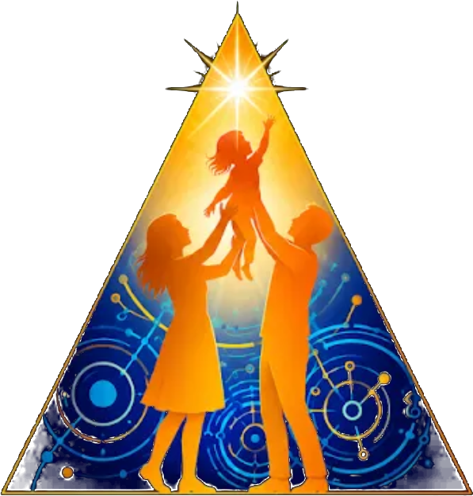

Companion to the Branding Style Sheet: the institute's palette re-issued for each condition it serves. Each sheet is labeled by the condition it responds to, and every value is computed against WCAG 2.1, not estimated.
Owner: Branding & Outreach
The settled assignments. Divisions first, Bridge Groups second. Every sheet that follows starts from these values and changes only what the named condition requires.
| Home | Color | Hex |
|---|---|---|
| Research | Inquiry Sienna | #B34E2B |
| Technology, AI & Information Systems | Interface Blue | #075AA6 |
| Experience Architecture | Embodied Teal | #154D5C |
| Lumina Lingua | Meaning Violet | #8A79A9 |
| The Light School | Growth Amber | #D2A35E |
| Community Service | Service Green | #8A9D68 |
| Governance | Stewardship Olive | #496129 |
| Finance & Fundraising | Foundation Teal | #366067 |
| Internal Communications | Radiant Violet | #60508D |
| Branding & Outreach | Beacon Brick | #8F4239 |
Condition responded to: reduced visual acuity and contrast sensitivity, including age-related change, cataract, and partial sight. What helps is not different hues but stronger separation between figure and ground. WCAG AA requires 4.5:1 for body-size text; seven of the ten base colors already pass on the ivory ground, and three do not. Colored text therefore carries a narrow outline in the opposite ground color: Midnight Blue on Ivory Tint, Ivory Tint on Midnight Blue. WCAG 2.1 treats a narrow border around the letter as part of the letter, so contrast is measured from the outline, 16.15:1 on either ground. The base color remains the brand color everywhere else.
| Home | Base vs ivory | Status |
|---|---|---|
| Research | 4.85 : 1 | passes as is |
| Technology, AI & Info. Systems | 6.48 : 1 | passes as is |
| Experience Architecture | 8.72 : 1 | passes as is |
| Lumina Lingua | 3.64 : 1 | outline required for text |
| The Light School | 2.14 : 1 | outline required for text |
| Community Service | 2.76 : 1 | outline required for text |
| Governance | 6.48 : 1 | passes as is |
| Finance & Fundraising | 6.48 : 1 | passes as is |
| Internal Communications | 6.47 : 1 | passes as is |
| Branding & Outreach | 6.52 : 1 | passes as is |
Growth Amber (The Light School) at 2.14:1 and Service Green (Community Service) at 2.76:1 are the lightest base colors; any text in them carries the Midnight outline. Luminara Gold #F4BE3B measures 1.60:1 against ivory and never carries text on light grounds; on Midnight it measures 10.12:1 and shines. Document ink #111a4a runs 15.42:1 on ivory.
The same eyes need the same separation on Midnight Blue #030F58 and video grounds, where the base colors run too deep. Each color lifts toward white by eighteen percent; the 3:1 large-text threshold is computed against Midnight. Body text on dark grounds is always Ivory, never a division color; these serve headings, icons, chips, and lower thirds, and colored headings carry the narrow Ivory Tint outline.
| Home | Dark-ground hex | vs Midnight | Large-text AA (3:1) |
|---|---|---|---|
| Research | #C16E51 | 4.63 : 1 | passes |
| Technology, AI & Info. Systems | #3478B6 | 3.72 : 1 | passes |
| Experience Architecture | #3F6D79 | 3.03 : 1 | passes, barely; prefer icon use over type |
| Lumina Lingua | #9F91B8 | 5.95 : 1 | passes |
| The Light School | #DAB47B | 8.90 : 1 | passes |
| Community Service | #9FAF83 | 7.36 : 1 | passes |
| Governance | #6A7D50 | 3.84 : 1 | passes |
| Finance & Fundraising | #5A7D82 | 3.87 : 1 | passes |
| Internal Communications | #7D70A2 | 3.88 : 1 | passes |
| Branding & Outreach | #A3645D | 3.74 : 1 | passes |
Condition responded to: deuteranopia and deuteranomaly (green cone absent or shifted) and protanopia and protanomaly (red cone absent or shifted), together the most common forms: roughly eight percent of men and half a percent of women. Red-green hue distinctions collapse; what survives is luminance, the lightness channel. A pair is safe when its lightness separation is large; it is risky when two hues differ mainly in redness or greenness at similar lightness. The closest pairs under simulated red-green vision, worse of protan and deutan:
| Pair | Simulated ΔE | Pair contrast | Reading | |
|---|---|---|---|---|
| Inquiry Sienna | Stewardship Olive | 1.8 | 1.34 : 1 | same swatch under red-green vision |
| Stewardship Olive | Beacon Brick | 3.8 | 1.01 : 1 | same swatch; identical lightness |
| Embodied Teal | Foundation Teal | 9.3 | 1.35 : 1 | same swatch; close in normal vision too |
| Interface Blue | Radiant Violet | 11.7 | 1.00 : 1 | close; identical lightness |
| Growth Amber | Service Green | 14.3 | 1.29 : 1 | close; rely on labels |
| Meaning Violet | Radiant Violet | 17.6 | 1.78 : 1 | close; rely on labels |
The response. Distances are CIELAB ΔE after the Machado, Oliveira & Fernandes (2009) simulation at full severity: below about 10 two colors read as the same swatch, and 20 or more is comfortable. Three pairs fall below 10, each joining a division to a Bridge Group or two Bridge Groups: Inquiry Sienna (Research) with Stewardship Olive (Governance), Stewardship Olive with Beacon Brick (Branding & Outreach), and Embodied Teal (Experience Architecture) with Foundation Teal (Finance & Fundraising). No chart accent is issued; wherever these pairs appear together, the governing rule on the last sheet applies and every element carries its label.
Condition responded to: tritanopia and tritanomaly (blue cone absent or shifted), the rare form: on the order of one in ten thousand, affecting men and women equally. Blue-yellow distinctions collapse; blues, teals, and violets draw together, as do yellows and warm midtones. The closest pairs under simulated tritan vision:
| Pair | Simulated ΔE | Pair contrast | Reading | |
|---|---|---|---|---|
| Embodied Teal | Foundation Teal | 7.2 | 1.35 : 1 | same swatch under tritan vision |
| Interface Blue | Foundation Teal | 8.9 | 1.00 : 1 | same swatch; identical lightness |
| Interface Blue | Embodied Teal | 13.0 | 1.34 : 1 | close; rely on labels |
| Stewardship Olive | Radiant Violet | 14.2 | 1.00 : 1 | close; identical lightness |
| Meaning Violet | Service Green | 14.2 | 1.32 : 1 | close; rely on labels |
| Stewardship Olive | Foundation Teal | 14.9 | 1.00 : 1 | close; identical lightness |
The response. Two pairs fall below 10, both joining Foundation Teal (Finance & Fundraising) to a blue or teal division: Embodied Teal (Experience Architecture) and Interface Blue (Technology). As on Sheet 2, the separation comes from labels, not from a chart accent; the governing rule on the last sheet carries it.
Condition responded to: achromatopsia, the absence of color perception: roughly one in thirty thousand people, who see the palette as pure luminance. This sheet shows the gray each color actually presents. Where two grays match, those colors are indistinguishable, and only position, label, shape, or pattern separates them.
| Home | Color | Presents as | Gray |
|---|---|---|---|
| The Light School | Growth Amber | #ABABAB | lightest |
| Community Service | Service Green | #969696 | light |
| Lumina Lingua | Meaning Violet | #818181 | light-mid |
| Research | Inquiry Sienna | #6D6D6D | mid |
| Internal Communications | Radiant Violet | #5A5A5A | merged band |
| Finance & Fundraising | Foundation Teal | #5A5A5A | merged band |
| Governance | Stewardship Olive | #5A5A5A | merged band |
| Technology, AI & Info. Systems | Interface Blue | #5A5A5A | merged band |
| Branding & Outreach | Beacon Brick | #595959 | merged band |
| Experience Architecture | Embodied Teal | #474747 | darkest |
The response. Five of the ten colors land in one merged gray band (#595959 to #5A5A5A): to an achromatopic reader, Technology and all four Bridge Groups are the same color. No palette that keeps these brand hues can fix that in gray; the fix is structural and already adopted as the governing rule: every color-coded element carries its label, and printed materials stay legible photocopied in black and white, which is also the test any staff member can run without tools.
Condition responded to: light sensitivity and pattern-related visual stress, including migraine and post-concussion sensitivity. What helps is a softened ground, reduced saturation over large areas, and no high-frequency contrast patterns. The document ivory #FBF7EA already sits below pure white; for large fields, the palette softens to these tints, blended three quarters of the way toward ivory. Tints are grounds only; they never carry meaning alone and never carry text without an ink-dark foreground.
| Home | Soft tint | Intended use |
|---|---|---|
| Research | #E9CDBA | Section tint |
| Technology, AI & Info. Systems | #BED0D9 | Section tint |
| Experience Architecture | #C2CDC7 | Section tint |
| Lumina Lingua | #DFD8DA | Section tint |
| The Light School | #F1E2C7 | Section tint |
| Community Service | #DFE1CA | Section tint |
| Governance | #CFD2BA | Row shading |
| Finance & Fundraising | #CAD1C9 | Row shading |
| Internal Communications | #D4CDD3 | Row shading |
| Branding & Outreach | #E0CABE | Row shading |
Full-saturation Luminara Gold stays an accent at this sheet's sizes, never a full-page ground; animated or flashing brand elements are not used in any material, on any surface.
Any meaning a color carries is also carried by a word, shape, or pattern. This rule governs every sheet above. Accessibility in this system is achieved first by labeling and iconography, and only second by the luminance engineering on these sheets; no chart, map, badge, or document in the institute's materials may rely on hue as the sole carrier of information. This is the accessibility floor beneath the palette, adopted alongside the every-page identity rule. Colored text on Ivory Tint carries a narrow Midnight Blue outline; on Midnight Blue, a narrow Ivory Tint outline.
Prevalence figures follow published vision-science reporting. Contrast values and gray equivalents are computed from the hex values by WCAG 2.1 relative luminance; pair distances on Sheets 2 and 3 are CIELAB ΔE after the Machado, Oliveira & Fernandes (2009) simulation. Color names pair each home's theme word with its color family.